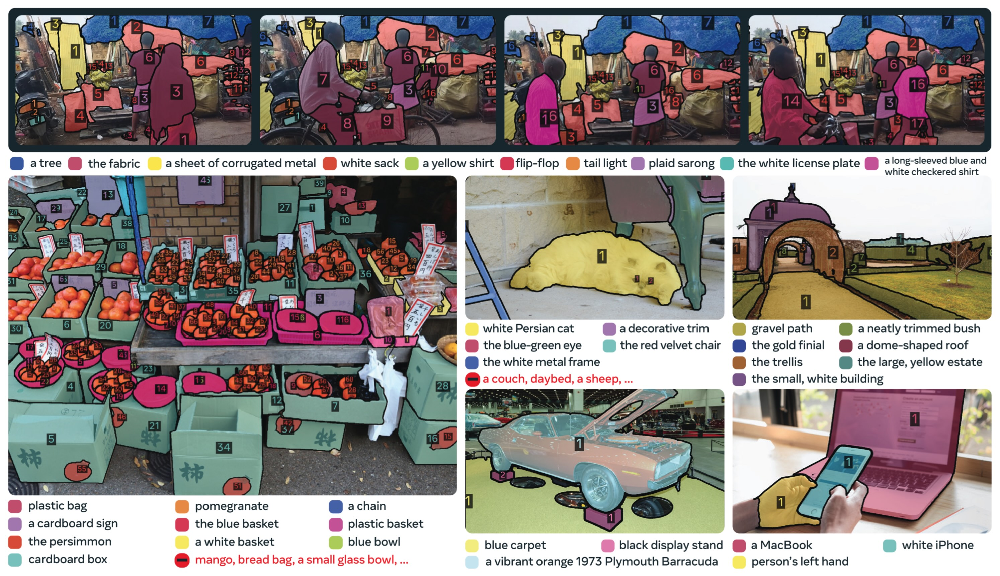
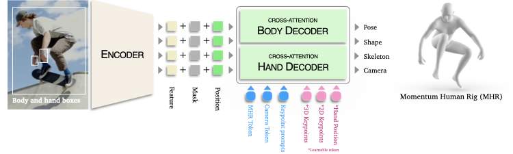

🌍 활용 사례 10선 — 실제 동작 자료와 함께
🎬 = 영상 데모 · 🖼️ = 이미지 결과 · 🧊 = 3D 복원. 각 케이스 하단의 버튼을 누르면 실제 자료가 새 탭에서 열립니다.
SAM 3 영상 추적 모델이 여러 동물을 동시에 분할·추적하는 능력을 가장 잘 보여주는 게 아래 강아지 데모입니다. 뛰어다니는 여러 마리를 각각 다른 색 마스크로 구분하고 프레임 내내 ID를 유지합니다. SA-FARI는 이 능력을 1만+ 카메라 트랩 영상에 적용한 사례입니다.

출처: facebookresearch/sam3 (assets/dog.gif)
FathomNet(MBARI)은 SAM 3 이미지 분할 모델로 수중 생물 마스크를 생성합니다. 아래 SA-Co 데이터셋 예시처럼, SAM 3는 다양한 텍스트 개념(고양이, 자동차, 과일, 전자기기 등)을 픽셀 단위로 분할합니다. 같은 방식이 탁한 물속 심해 생물에도 적용됩니다.

출처: facebookresearch/sam3 (assets/sa_co_dataset.jpg)
Edits 앱은 SAM 3 추적으로 "특정 인물·사물만 골라" 효과를 입힙니다. 아래 축구 영상 데모처럼, "흰 유니폼 선수"만 분할·추적할 수 있어서 그 선수에게만 스포트라이트·아웃라인을 줄 수 있습니다.

출처: facebookresearch/sam3 (assets/player.gif)
SAM 3가 사진에서 물체를 분할하면, SAM 3D가 3D로 복원합니다. 아래는 SAM 3D Body(인체 복원) 모델 구조로, 단일 사진에서 사람의 3D 자세·체형을 복원하는 실제 모델입니다. 가구는 SAM 3D Objects가 같은 방식으로 3D 메시를 만듭니다.

출처: facebookresearch/sam-3d-body (assets/model_diagram.png)
🧊 SAM 3D 모델 명세
가장 강력한 실무 활용. "solar panel" 텍스트 하나로 항공 사진의 패널을 전부 분할합니다.
이렇게 만든 라벨로 경량 YOLO/RF-DETR을 학습시켜 GPU 없는 현장에 배포합니다.
(실제 결과 이미지는 Roboflow 블로그 링크 참고 — 보라=정상 패널, 빨강=눈 덮인 패널처럼 표시됩니다.)
SAM 3(무겁지만 똑똑한 선생님)가 라벨을 만들고, YOLO(가볍고 빠른 학생)가 현장에서 실시간 추론. NUC에서도 돌아갑니다.
Microsoft가 facebook-sam3를 Azure AI Foundry에 추가했습니다. "person"·"backpack" 같은 프롬프트로 거리 인원을 분할하거나, 얼굴·번호판을 자동 픽셀화합니다. (people-walking 이미지 분할 결과는 Roboflow Docs 예시 참고.)
로봇은 SAM 3의 오픈 보캐뷸러리로 "파란 컵을 집어"처럼 말로 물체를 지정합니다.
특히 Meta는 Aria Gen 2 스마트글래스의 1인칭 영상에서 "hands"로 손을 분할·추적하는 실제 데모를 공개했는데,
이는 로봇 시점(egocentric) 인식에 직결됩니다. Llama MLLM과 결합한 SAM 3 Agent는
"사람이 손 뻗는 물체 찾아" 같은 복합 추론도 처리합니다.
기존 YOLO26은 학습한 클래스만 인식했지만, SAM 3는 학습에 없던 물체도 말로 지정 가능. 인식 단계가 유연해집니다.
자율주행은 고정 라벨에 없는 물체가 위험합니다. SAM 3는 "vehicle" 하나로
거리의 차·오토바이를 전부 분할합니다(아래 위 1번 데이터셋 이미지에서도 자동차가 분할됨).
실제 차량엔 SAM 3로 라벨을 만들고 경량 모델을 증류해 올립니다.
SAM 3는 "platelet(혈소판)" 같은 세밀한 의료 개념은 기본 상태로 약합니다. Meta도 이를 명시하며, 소량 데이터로 파인튜닝하면 빠르게 적응한다고 밝혔습니다. (Roboflow 파인튜닝 가이드의 "cardboard/trash" 예시로 파인튜닝 후 분할 흐름을 볼 수 있습니다.)
Meta 공식 Segment Anything Playground에 스포트라이트·모션트레일·매그니파이 등 바로 재생되는 예시 영상이 모여 있습니다. 학생이 직접 사진/영상을 올려 텍스트로 분할하는 장면을 보여주기 가장 좋은 곳입니다. VFX(로토), GIS(위성 피처 추출)에도 같은 마스크가 쓰입니다.